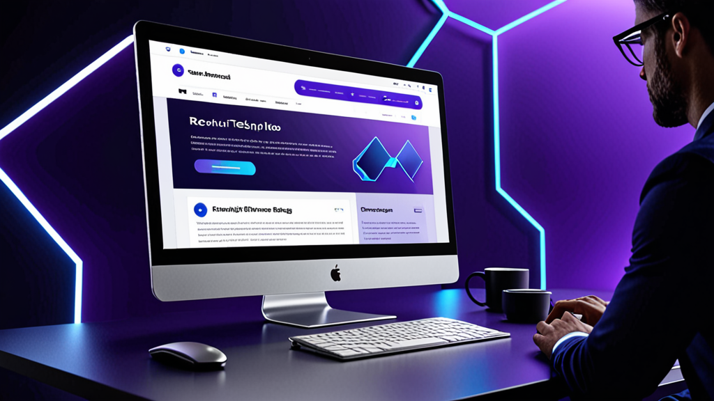

Die besten KI-Antwort-Tools für Recruiting-Nachrichten: Ein Leitfaden für smartere Kandidatenansprache
Wenn Sie schon einmal mehr als zehn Minuten damit verbracht haben, eine persönliche LinkedIn-Nachricht an einen passiven Kandidaten zu tippen, kennen Sie den Schmerz. Sie möchten, dass sie menschlich klingt, auf die spezifische Erfahrung eingeht und den richtigen Call-to-Action enthält – ohne versehentlich den falschen Firmennamen einzufügen.
Die besten KI-Antwort-Tools für Recruiting-Nachrichten lösen genau dieses Problem. Sie helfen Ihnen, eine Ansprache zu entwerfen, die persönlich wirkt, nicht wie eine Vorlage. Aber nicht alle Tools funktionieren gleich, und zu wissen, wie man sie effektiv einsetzt, macht den Unterschied zwischen einem Roboter und einem Recruiter, der seine Hausaufgaben gemacht hat.
Dieser Leitfaden zeigt, worauf Sie bei einem KI-Recruiter-Assistenten achten sollten, wie Sie ihn nutzen, ohne Ihre eigene Stimme zu verlieren, und gibt praktische Tipps zur Steigerung Ihrer Antwortraten.
Warum Recruiter einen besseren Weg zum Schreiben von Nachrichten brauchen
Recruiter verschicken jede Woche Dutzende – manchmal Hunderte – von Nachrichten. Jede erfordert einen Kontextwechsel: das Profil des Kandidaten prüfen, die Stellenbeschreibung checken und eine Nachricht verfassen, die in einem überfüllten Posteingang heraussticht.
Das Ergebnis? Viele Recruiter greifen auf generische Vorlagen zurück. Kandidaten erkennen das sofort. Laut LinkedIn-Daten liegen die Antwortraten für InMails bei durchschnittlich 20-25 % – und diese Zahl sinkt deutlich, wenn die Nachricht nach Massenware klingt.
Ein Recruiter-Nachrichten-Generator spart nicht nur Zeit. Er hilft Ihnen, die Qualität auch bei hohem Volumen zu halten. Wenn Sie einen Entwurf erstellen können, der die Rolle, die Branche und ein relevantes Detail aus dem Profil des Kandidaten einbezieht, ist die Wahrscheinlichkeit einer Antwort viel höher.
Was macht die besten KI-Antwort-Tools für Recruiting-Nachrichten aus?
Nicht jedes KI-Schreibtool ist für das Recruiting gebaut. Bevor Sie eines auswählen, sollten Sie auf Folgendes achten:
1. Kontextverständnis
Das Tool sollte verstehen, wer Sie sind, wer der Kandidat ist und für welche Rolle Sie rekrutieren. Generische KI-Chatbots, die keinen Kontext berücksichtigen, liefern vage, unbrauchbare Entwürfe.
2. Tonfall-Kontrolle
Sie brauchen die Möglichkeit, den Ton anzupassen – von professionell und formell bis locker und direkt. Ein Kandidatenansprache-Tool, das nur in einem Stil schreibt, funktioniert nicht für verschiedene Rollen und Branchen.
3. Plattform-Integration
Die besten Tools arbeiten dort, wo Sie bereits tätig sind: LinkedIn Recruiter, Greenhouse, Lever, Workday. Wenn Sie zwischen Tabs kopieren und einfügen müssen, ist der Zweck der Automatisierung verfehlt.
4. Datenschutz und Kontrolle
Sie sollten sich nie Sorgen machen müssen, dass Ihr API-Key offengelegt wird oder Ihre Nachrichten automatisch versendet werden. Die besten KI-Antwort-Tools für Recruiting-Nachrichten geben Ihnen die volle Kontrolle über das, was versendet wird, und halten Ihre Daten lokal.
Wie Sie einen KI-Recruiter-Assistenten nutzen, ohne wie KI zu klingen
Selbst das beste Tool kann steife Ausgaben produzieren, wenn Sie es nicht anleiten. So bewahren Sie eine menschliche Note:
Beginnen Sie mit einem starken Prompt
Klicken Sie nicht einfach auf „Generieren“. Geben Sie dem Tool spezifische Details:
- Aktuelle Rolle und Unternehmen des Kandidaten
- Ein bestimmtes Projekt oder eine Leistung aus seinem Profil
- Warum diese Rolle für seinen Karriereweg relevant ist
Beispiel-Prompt:
„Schreibe eine kurze LinkedIn-Nachricht an einen Senior Product Manager bei Spotify. Erwähne seine Arbeit an der Personalisierung von Funktionen. Die Rolle ist für einen Product Lead bei einem Fintech-Startup in der Series B. Tonfall: freundlich, aber professionell.“
Bearbeiten Sie die Ausgabe
Lesen Sie den Entwurf immer vor dem Versenden. Entfernen Sie alle Phrasen, die unnatürlich wirken. Fügen Sie eine persönliche Frage oder Beobachtung hinzu, die nur Ihnen auffällt. Die KI ist ein Ausgangspunkt – Ihre Stimme beendet die Nachricht.
Verwenden Sie verschiedene Vorlagen für verschiedene Phasen
Eine Kaltakquise-Nachricht sollte nicht wie ein Ablehnungsschreiben klingen. Ein KI-Recruiter-Assistent sollte es Ihnen ermöglichen, zwischen folgenden Phasen zu wechseln:
- Erstkontakt
- Follow-up (bei keiner Antwort)
- Einladung zum Vorstellungsgespräch
- Absage oder Update
Jede Phase erfordert einen anderen Ton und ein anderes Detailniveau.
Praxisbeispiele: Vorher und Nachher mit KI-Unterstützung
Schauen wir uns reale Szenarien an, in denen ein KI-Tool die Nachricht verbessert.
Kaltakquise
Vorher (generische Vorlage):
„Hallo [Name], ich bin auf Ihr Profil gestoßen und denke, Sie wären eine großartige Besetzung für eine Rolle in unserem Unternehmen. Lassen Sie mich wissen, ob Sie interessiert sind.“
Nachher (mit KI-Recruiter-Assistent):
„Hallo Sarah, Ihre Arbeit zur Nutzerbindung bei HubSpot ist mir aufgefallen – besonders die Kampagne, die die Abwanderung um 12 % reduziert hat. Wir bauen ein ähnliches Growth-Team bei einem Series-A-Unternehmen auf und könnten Ihre Expertise gebrauchen. Offen für einen kurzen Chat diese Woche?“
Die zweite Nachricht bezieht sich auf konkrete Arbeit, zeigt Recherche und stellt eine klare Frage. Das ist der Unterschied zwischen Löschen und Antworten.
Follow-up
Vorher:
„Nur eine kurze Erinnerung an meine vorherige Nachricht. Lassen Sie mich wissen, ob Sie interessiert sind.“
Nachher:
„Hallo Sarah – ich weiß, Sie sind beschäftigt, also halte ich es kurz. Wenn der Zeitpunkt nicht passt, ist das völlig in Ordnung. Aber wenn Sie neugierig auf die Rolle sind, teile ich gerne mehr Details. Danke, dass Sie es in Betracht ziehen.“
Dieses Follow-up würdigt die Zeit des Kandidaten und nimmt den Druck raus, was oft zu einer Antwort führt.
Tipps für bessere Antwortraten bei Kandidaten
Die Nutzung der besten KI-Antwort-Tools für Recruiting-Nachrichten ist nur ein Teil der Gleichung. Hier sind weitere Strategien zur Verbesserung Ihrer Ansprache:
Über das Profil hinaus personalisieren
Erwähnen Sie etwas aus einem kürzlichen Beitrag, einer gemeinsamen Verbindung oder einer Konferenz, an der sie teilgenommen haben. KI kann diese Nuancen nicht immer erfassen – fügen Sie sie manuell hinzu.
Halten Sie es kurz
Kandidaten lesen Nachrichten auf dem Handy. Zielen Sie auf maximal 3-5 Sätze ab. Wenn Ihr KI-Entwurf länger ist, kürzen Sie ihn.
Fügen Sie eine niedrigschwellige Bitte ein
Statt „Können wir einen Anruf vereinbaren?“ versuchen Sie „Ich schicke Ihnen gerne die Stellenbeschreibung, wenn Sie neugierig sind.“ Geringeres Engagement = höhere Antwortwahrscheinlichkeit.
Verwenden Sie eine klare Betreffzeile (bei E-Mails)
Wenn Sie ein ATS wie Greenhouse oder Lever nutzen, landet Ihre Nachricht möglicherweise im Posteingang. Verwenden Sie eine Betreffzeile wie „Kurze Frage zu Ihrer Erfahrung bei [Unternehmen]“ – nicht „Jobangebot“.
Warum Recruiting-Automatisierung trotzdem menschlich wirken sollte
Manche Recruiter befürchten, dass der Einsatz von KI sie weniger authentisch macht. Das Gegenteil ist der Fall. Wenn Sie die sich wiederholenden Teile des Schreibens automatisieren, schaffen Sie mentale Energie für die wichtigen Dinge: das Profil des Kandidaten lesen, über seine Eignung nachdenken und eine Beziehung aufbauen.
Ein Recruiting-Automatisierungs-Tool sollte das Tippen übernehmen, nicht das Denken. Die besten Tools respektieren diese Grenze.
Das richtige Tool für Ihren Workflow auswählen
Wenn Sie Optionen evaluieren, überlegen Sie, wie das Tool in Ihren Arbeitsalltag passt. Verbringen Sie die meiste Zeit in LinkedIn Recruiter? Oder leben Sie in einem ATS wie Workday oder Lever? Die besten KI-Antwort-Tools für Recruiting-Nachrichten integrieren sich nahtlos in Ihren bestehenden Workflow, nicht als separate App, die Sie öffnen müssen.
Denken Sie auch an die Sicherheit. Wenn Ihre Organisation mit sensiblen Kandidatendaten umgeht, brauchen Sie ein Tool, das Informationen lokal verarbeitet und Nachrichten nicht auf externen Servern speichert. Datenschutzorientiertes Design ist wichtiger als ausgefallene Funktionen.
Ein Tool, das diese Kriterien erfüllt, ist RecruitReply AI – es funktioniert innerhalb von LinkedIn Recruiter und großen ATS-Plattformen, nutzt KI auf dem Gerät und versendet niemals automatisch Nachrichten. Aber unabhängig davon, für welches Tool Sie sich entscheiden, die Prinzipien in diesem Leitfaden gelten.
Abschließende Gedanken
Die besten KI-Antwort-Tools für Recruiting-Nachrichten ersetzen keine Recruiter. Sie bauen Hürden ab. Wenn Sie in Sekundenschnelle einen personalisierten, menschlich klingenden Entwurf erstellen können, versenden Sie bessere Nachrichten, konsistenter und mit weniger Aufwand.
Das führt zu höheren Antwortraten, besseren Kandidatenbeziehungen und mehr Zeit für die strategischen Teile des Recruitings, die wirklich zählen.
Wenn Sie bereit sind, ein Tool auszuprobieren, das Ihren Workflow und die Privatsphäre Ihrer Kandidaten respektiert, schauen Sie sich RecruitReply AI an. Es wurde für Recruiter entwickelt, die schneller bessere Nachrichten schreiben wollen – ohne ihre Stimme zu verlieren.